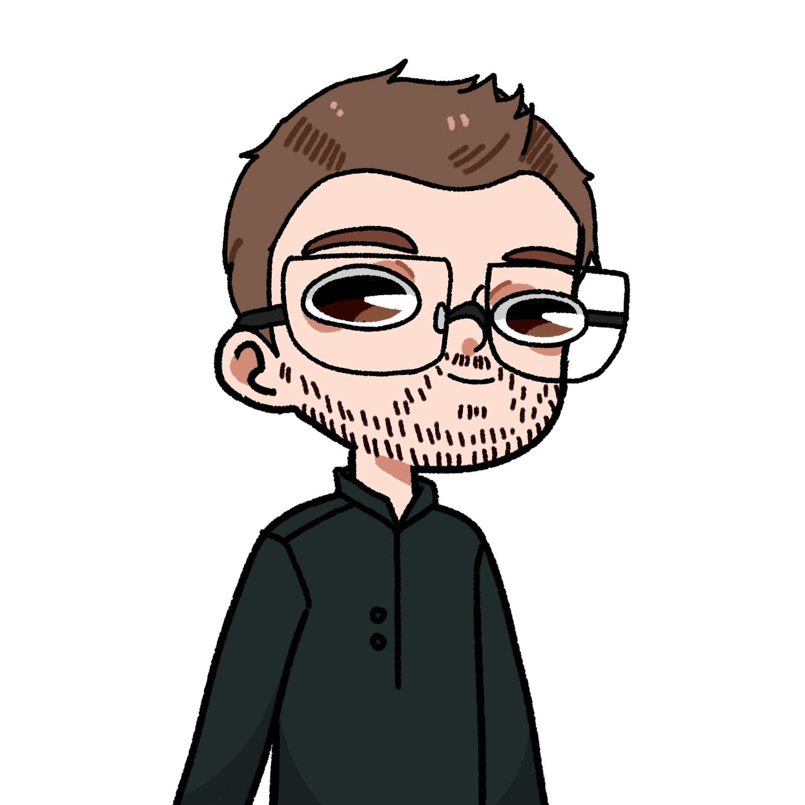

POUF
Le Koyadamesateï tomba lourdement au centre de la piste, que Matéo avait eu la bonne idée de quitter. À peine fut-il remis sur pied, que sa tête chargée de ses multiples tentacules fonça vers Antoine.
Antoine : Ah non, pas cette fois !
Antoine saisit alors l’étrange guitare de Baptiste - de ce qu’il en restait tout du moins – et la lança violemment dans l’unique œil du monstre. Ce dernier poussa un hurlement terrifiant, tout en balayant la zone avec ses tentacules.
 Dr. Friedmann : Poussez vous, je me le fait !
Dr. Friedmann : Poussez vous, je me le fait !
Le docteur, de nouveau derrière sa mitrailleuse gatling, vida ses munition dans la tête de la créature, qui se retourna de surprise, tombant sur sa carapace sans pouvoir se relever. Agitant désespérément ses pattes en l’air, le Koyadamesateï fut alors pris pour cible par l’ensemble de l’assemblée lui faisant face. Tandis que Samy et Ivan lui défonçait le crâne à coup de cireuse, Antoine enfonçait la guitare dans l’anus du monstre, savourant une vengeance bien méritée. Aden et Thibault brisèrent les pattes, Guillaume déféqua sur le ventre de la créature, et Matéo et Léopold s’amusait à arracher des morceau de la carapaces à l’aide de pioche trouvées non loin. Alors que le monstre ne ressemblait déjà plus à grand-chose, Alexis eu une idée pour s’en débarrasser définitivement. Il pris l’Ufiawgun, et tira dans la brèche d’où était tombée la bête. Un éclaire tomba alors directement sur la tête du Koyadamesateï, qui explosa, recouvrant tout le monde d’un liquide blanc et chaud.
 Léopold : Bien joué, j’y avait pas pensé !
Léopold : Bien joué, j’y avait pas pensé !
 Alexis : Oui mais… l’Ufiawgun est cassé.
Alexis : Oui mais… l’Ufiawgun est cassé.
 Aden : Alan pourrait pas le réparer ?
Aden : Alan pourrait pas le réparer ?
Dr. Friedmann : Oh merde les otages ! Je les avaient oubliés eux. Je vais les chercher !
 Maëlle : La brèche est refermée regardez !
Maëlle : La brèche est refermée regardez !
 Ivan : Donc Xydoé ne pourra pas rentrer chez elles ?…
Ivan : Donc Xydoé ne pourra pas rentrer chez elles ?…
 Samy : J’ai bien peur que non.
Samy : J’ai bien peur que non.
Ivan : YOUHOU ! Dit Léopold, on peut l’adopter ? Dit ouiiiii !
Léopold : Euh eh bien.. Pourquoi pas. Je n’ai pas le cœur de la tuer une deuxième fois, et visiblement elle vient de rater le dernier bus pour rentrer chez elle.
Ivan : GÉNIAL !
Ivan sera Xydoé et Léopold dans un câlin chaud et doux, bien qu’ils sentaient tous la transpiration.
 Ambra : Ah vous êtes là !
Ambra : Ah vous êtes là !
Samy : Tu nous cherchait ?
Oui pour vous dire que déjà, Samy j’ai ta prochaine livraison de Kidum, et deuxièmement Farah a été assassinée donc la France a stoppée ses engagements militaires.
Ivan : J’ai rien compris.
Ambra : On est plus en guerre.
Samy : Oh cool. Et pour ma livraison.. Je peux les récupérer sur place ? Tant que je suis là, autant en profiter !
Ambra : Oh que oui tu va en profiter.